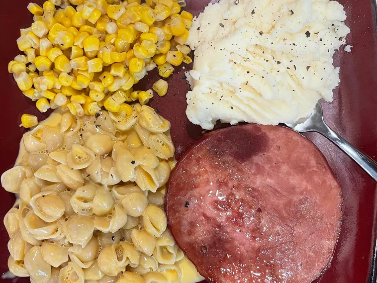

Easy Bake Ham Steaks

Description:
Very quick and easy baked ham steak recipe that pairs well with scalloped potatoes or mac and cheese.
Ingredients:
- 1 cup water, or more as needed
- 3 tablespoons brown sugar
- 2 tablespoons Worcestershire sauce
- 5 whole cloves
- 2 slices ham steak
Steps:
- Preheat the oven to 375 degrees F (190 degrees C).
- Mix water, brown sugar, Worcestershire sauce, and cloves in a baking dish. Arrange ham steaks in baking dish, coating with sugar mixture. Add more water as needed to cover ham.
- Bake in the preheated oven until ham is tender, 35 to 45 minutes.